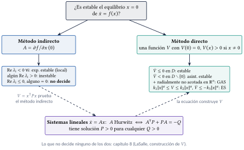
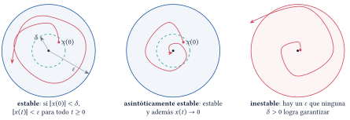
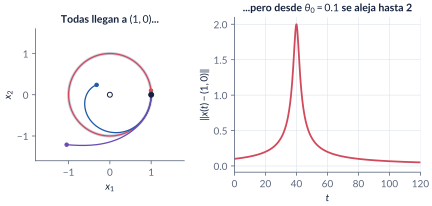
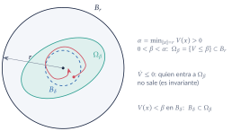
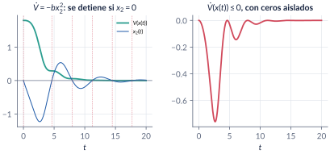
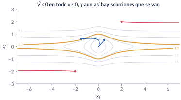
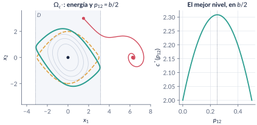
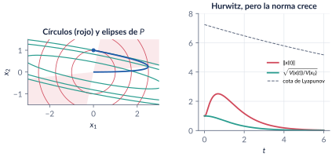
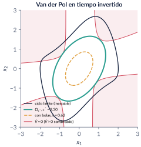

7. Estabilidad de Lyapunov
Semanas 8–9 · dos semanas
¿Qué les pasa a las soluciones que empiezan cerca de un equilibrio? Esta parte da las definiciones precisas (estable, asintóticamente estable, exponencialmente estable, local y global) y los dos métodos de Lyapunov para responder sin resolver la ecuación: el indirecto, que mira la jacobiana, y el directo, que busca una función \(V\) que haga de energía y decrezca a lo largo de las soluciones. Los dos se encuentran en los sistemas lineales, donde la ecuación de Lyapunov \(A^\top P+PA=-Q\) construye la función, y vuelven a lo no lineal para estimar la región de atracción.
Al terminar esta parte usted podrá
- Escribir las definiciones de estabilidad, estabilidad asintótica y exponencial (locales y globales), y reconocer con ejemplos por qué ninguna sobra.
- Usar el método indirecto: decidir la estabilidad local con la jacobiana, y reconocer cuándo no decide nada.
- Usar el método directo: proponer una función candidata, calcular \(\dot V\) sin resolver la ecuación y sacar la conclusión correcta (y no más).
- Distinguir lo local de lo global: funciones radialmente no acotadas, el teorema de Barbashin–Krasovskii y las cotas exponenciales.
- Clasificar formas cuadráticas y usar la ecuación de Lyapunov \(A^\top P+PA=-Q\) para sistemas lineales: qué dice, qué no dice y cómo se resuelve.
- Estimar la región de atracción con conjuntos de nivel, y no con regiones donde \(\dot V<0\).
Ruta de las clases
| Semana | Qué se ve | Capítulo | Scripts |
|---|---|---|---|
| 8 | Definiciones y el reto \(\varepsilon\)–\(\delta\); convergencia sin estabilidad; método indirecto y cuándo se calla; método directo: el teorema, su prueba y los primeros ejemplos | §7.1–7.4 | C7_Ej1–C7_Ej3 |
| 9 | Global (Barbashin–Krasovskii) y exponencial; formas cuadráticas y Sylvester; el término cruzado del péndulo; sistemas lineales y la ecuación de Lyapunov; región de atracción | §7.5–7.8 | C7_Ej4–C7_Ej10, crearModelo_PenduloLyapunov |
Lo esencial, en una página

Estable, asintótica, exponencial (Khalil, Def. 4.1)
El equilibrio \(x=0\) de \(\dot x=f(x)\) es estable si para cada \(\varepsilon>0\) hay \(\delta>0\) con \(\|x(0)\|<\delta\Rightarrow\|x(t)\|<\varepsilon\) para todo \(t\ge0\); asintóticamente estable si además las soluciones cercanas convergen a \(0\); exponencialmente estable si \(\|x(t)\|\le k\|x(0)\|e^{-\lambda t}\) cerca del origen. Es global si vale para toda condición inicial.

Trampa: “si todas las soluciones convergen, el equilibrio es asintóticamente estable”
Con \(\dot r=r(1-r)\), \(\dot\theta=\sin^2(\theta/2)\), todas las soluciones llegan a \((1,0)\), pero la que arranca en \(\theta_0=0.1\) da la vuelta completa y se aleja hasta distancia 2. El equilibrio es atractivo e inestable: por eso la definición exige estabilidad y convergencia.

Método indirecto (Khalil, Teo. 4.7)
Si la jacobiana \(A=\partial f/\partial x(0)\) es Hurwitz, el origen es (exponencialmente) asintóticamente estable; si algún valor propio tiene parte real positiva, es inestable. Si hay valores propios en el eje imaginario y ninguno a la derecha, no decide: \(\dot x=-x^3\) y \(\dot x=+x^3\) tienen la misma linealización.
Método directo (Lyapunov, 1892; Khalil, Teo. 4.1)
Si \(V\) es \(\mathcal C^1\), definida positiva en \(D\) y \(\dot V=\nabla V\cdot f\le0\) en \(D\), el origen es estable; si \(\dot V<0\) en \(D\setminus\{0\}\), es asintóticamente estable. Si además \(D=\mathbb R^n\) y \(V\) es radialmente no acotada, es globalmente asintóticamente estable (Barbashin–Krasovskii).

Trampa: “\(\dot V\le0\) y casi siempre \(<0\): asintóticamente estable”
La energía del péndulo con fricción da \(\dot V=-bx_2^2\), que se anula en todo el eje \(x_2=0\): el teorema da solo estabilidad. La energía decrece con escalones. Para pasar a la estabilidad asintótica hace falta LaSalle (parte 8) o cambiar de \(V\).

Trampa: “\(\dot V<0\) en todo el espacio basta para la estabilidad global”
Con \(V=x_1^2/(1+x_1^2)+x_2^2\) (que no es radialmente no acotada) hay un sistema con \(\dot V<0\) en todo \(x\neq0\) y soluciones que se van a infinito: bajan de nivel en nivel, pero los niveles con \(c\ge1\) no son curvas cerradas.

Trampa: “menores líderes \(\ge0\), luego \(P\ge0\)”
\(P=\mathrm{diag}(0,-1)\) tiene \(\Delta_1=\Delta_2=0\) y \(x^\top Px=-x_2^2\). Sylvester con menores líderes vale para \(P>0\); para \(P\ge0\) hay que mirar todos los menores principales, o los valores propios.
Inclinar la energía
Para el péndulo, \(V=\tfrac12x^\top\begin{bmatrix}bp_{12}&p_{12}\\p_{12}&1\end{bmatrix}x+a(1-\cos x_1)\) con \(0<p_{12}<b\) da \(\dot V=-ap_{12}x_1\sin x_1-(b-p_{12})x_2^2<0\) en \(|x_1|<\pi\): un término cruzado vuelve estricta una función que no lo era, y con \(p_{12}=b/2\) certifica un nivel mayor que la energía (\(c^*=2.31\) contra \(2\)).

Ecuación de Lyapunov (Khalil, Teo. 4.6)
\(A\) es Hurwitz si y solo si para cada \(Q>0\) la ecuación \(A^\top P+PA=-Q\) tiene una solución \(P>0\). Es única y \(P=\int_0^\infty e^{A^\top t}Qe^{At}dt\): \(x_0^\top Px_0=\int_0^\infty x^\top Qx\,dt\) es el costo desde \(x_0\). En MATLAB, la \(P\) del curso es lyap(A',Q), no lyap(A,Q).
Trampa: “si \(A\) es Hurwitz, la norma decrece”
\(A=[-1\ 10;\ 0\ -2]\) tiene valores propios \(-1\) y \(-2\), y desde \((0,1)\) la norma sube a \(2.51\) antes de decaer: \(A+A^\top\) es indefinida. La \(P\) de la ecuación de Lyapunov da la métrica en la que el sistema sí se contrae.

Trampa: “si la ecuación de Lyapunov tiene solución, \(A\) es Hurwitz”
Tiene solución única siempre que \(\lambda_i+\lambda_j\neq0\). Lo que caracteriza a Hurwitz es que sea definida positiva; si \(A\) es inestable, \(P\) tiene tantos valores propios negativos como valores propios inestables de \(A\).
Trampa: “\(\dot V<0\) en \(D\), luego \(D\) está en la región de atracción”
En el péndulo, la solución que arranca en \((1.5,3)\in D=\{|x_1|<\pi\}\) sale de \(D\) en \(t=0.72\) y termina en \((2\pi,0)\). Solo un conjunto de nivel acotado dentro de \(D\) es una estimación válida; el mejor toca \(\{\dot V=0\}\) o la frontera de \(D\).

Explorador interactivo
Cuatro pestañas con los modelos del capítulo. Todo se calcula en su navegador (Runge–Kutta de paso fijo y la ecuación de Lyapunov \(2\times2\) resuelta en forma cerrada), con los mismos modelos de C7_Ej3, C7_Ej5, C7_Ej6, C7_Ej8, C7_Ej9 y C7_Ej10.
Retos con el explorador
- Péndulo: ponga \(p_{12}/b=0\) (la energía). ¿Dónde se detiene \(V\)? Suba \(p_{12}\): ¿desaparecen los escalones? ¿Para qué valor es mayor \(c^*\)?
- Péndulo: busque una condición inicial dentro de \(D\) que termine en \((2\pi,0)\). ¿Cuánto vale \(V(x_0)\) comparado con \(c^*\)?
- Formas: con \(\theta=0\), \(\lambda_1=0\) y \(\lambda_2<0\), lea los menores líderes. ¿Qué dice Sylvester? ¿Qué es \(P\)?
- Ecuación de Lyapunov: escoja el caso “no normal”. ¿Cuánto crece la norma? Cambie \(a_{12}\): ¿desde qué valor deja de crecer? (Compare con el problema 7.7.)
- Ecuación de Lyapunov: escoja el caso “inestable”. ¿Tiene solución la ecuación? ¿Qué signo tienen los valores propios de \(P\)? Lleve \(a_{22}\) a \(1\).
- Región de atracción: suba \(c/c^*\) por encima de \(1\). ¿Dejan de converger las soluciones de inmediato? ¿Por qué ya no es una estimación certificada? Cambie \(q\): ¿cuánto mejora el área?
Códigos de esta parte
Los bloques salen directamente de los archivos del repositorio. Ejecute antes iniciarCurso. verificarCap07 comprueba los números del capítulo (34/34). Ningún script necesita toolboxes: la ecuación de Lyapunov se resuelve con ecuacionLyapunov (en comun/), que sigue la convención \(A^\top P+PA=-Q\).
Péndulo con y sin fricción (§7.2).
a = 1; opc = odeset('RelTol', 1e-10, 'AbsTol', 1e-12);
for b = [0 0.5]
[t, X] = ode45(@(t, x) [x(2); -a*sin(x(1)) - b*x(2)], linspace(0, 40, 4001), [0.3; 0], opc);
E = a*(1 - cos(X(:,1))) + X(:,2).^2/2;
fprintf('b = %.1f: E(0) = %.4f, E(40) = %.2e, max x1 (t > 5) = %.4f, |x(40)| = %.2e\n', ...
b, E(1), E(end), max(X(t > 5, 1)), norm(X(end, :)));
endConverger no es ser estable (§7.2).
fp = @(t, z) [z(1)*(1 - z(1)); sin(z(2)/2)^2]; % z = (r, theta)
[t, Z] = ode45(fp, [0 400], [1; 0.1], opc);
d = sqrt((Z(:,1).*cos(Z(:,2)) - 1).^2 + (Z(:,1).*sin(Z(:,2))).^2);
fprintf('polar: theta0 = 0.1, distancia máxima a (1,0) = %.3f, theta(400)/(2 pi) = %.4f\n', ...
max(d), Z(end, 2)/(2*pi));La jacobiana del péndulo (§7.3).
a = 1; b = 0.5;
J = @(x1) [0 1; -a*cos(x1) -b]; % jacobiano de f en (x1, 0)
fprintf('(0,0): eig = %s\n', num2str(eig(J(0)).', '%.4f '));
fprintf('(pi,0): eig = %s\n', num2str(eig(J(pi)).', '%.4f '));Cuando la linealización se calla (§7.3).
opc = odeset('RelTol', 1e-10, 'AbsTol', 1e-12); t = linspace(0, 10, 1001);
for aa = [-1 0 1]
fprintf('x'' = %+d x - x^3: linealización en 0 tiene valor propio %+d\n', aa, aa);
end
[~, xc] = ode45(@(t, x) -x^3, t, 1, opc);
[~, xl] = ode45(@(t, x) -x, t, 1, opc);
fprintf('x(10): con -x^3 %.4f (exacto 1/sqrt(21) = %.4f), con -x %.3e\n', xc(end), 1/sqrt(21), xl(end));La energía a lo largo de las soluciones (§7.4).
a = 1; opc = odeset('RelTol', 1e-10, 'AbsTol', 1e-12); t = linspace(0, 20, 4001);
V = @(X) a*(1 - cos(X(:,1))) + X(:,2).^2/2;
for b = [0 0.5]
[~, X] = ode45(@(t, x) [x(2); -a*sin(x(1)) - b*x(2)], t, [2.5; 0], opc);
Vt = V(X); disip = trapz(t, b*X(:,2).^2);
fprintf('b = %.1f: V(0) = %.4f, V(20) = %.4f, int b x2^2 = %.4f, max dV = %.1e\n', ...
b, Vt(1), Vt(end), disip, max(diff(Vt)));
end\(\dot V<0\) en todas partes, sin estabilidad global (§7.5).
f = @(t, x) [-6*x(1)/(1 + x(1)^2)^2 + 2*x(2); -2*(x(1) + x(2))/(1 + x(1)^2)^2];
V = @(X) X(:,1).^2./(1 + X(:,1).^2) + X(:,2).^2;
opc = odeset('RelTol', 1e-10, 'AbsTol', 1e-12);
[t, X] = ode45(f, [0 200], [2; 2], opc); Vt = V(X);
fprintf('desde (2,2): x(200) = (%.1f, %.3f); V(0) = %.3f, V(200) = %.3f; max dV = %.1e\n', ...
X(end, 1), X(end, 2), Vt(1), Vt(end), max(diff(Vt)));
[~, Y] = ode45(f, [0 200], [0.5; 0.5], opc);
fprintf('desde (0.5,0.5) (V = %.2f < 1): |x(200)| = %.1e\n', V([0.5 0.5]), norm(Y(end, :)));Cota exponencial (§7.5).
ts = linspace(0, 3, 301);
[~, xe] = ode45(@(t, x) -x - x^3, ts, 3, opc);
fprintf('x'' = -x - x^3 desde 3: x(1) = %.4f <= 3/e = %.4f; max(x - 3e^{-t}) = %.2e\n', ...
interp1(ts, xe, 1), 3/exp(1), max(xe - 3*exp(-ts(:))));Sylvester y su trampa (§7.6).
Pa = @(a) [a 0 1; 0 a 2; 1 2 a];
for a = [1 sqrt(5) 3]
P = Pa(a); D = [P(1,1) det(P(1:2,1:2)) det(P)];
fprintf('a = %.4f: menores líderes = (%7.3f, %7.3f, %7.3f), eig = (%s)\n', ...
a, D, num2str(sort(eig(P)).', '%7.3f '));
endP = diag([0 -1]);
lideres = [P(1,1) det(P)];
principales = [P(1,1) P(2,2) det(P)];
fprintf('P = diag(0,-1): líderes = (%g, %g), todos los principales = (%g, %g, %g), eig = (%g, %g)\n', ...
lideres, principales, eig(P));El término cruzado del péndulo (§7.6, §7.8).
a = 1; b = 0.5; p12 = b/2;
V = @(x1, x2) 0.5*(b*p12*x1.^2 + 2*p12*x1.*x2 + x2.^2) + a*(1 - cos(x1));
Vd = @(x1, x2) -a*p12*x1.*sin(x1) - (b - p12)*x2.^2;
cEst = @(q) 2*a + pi^2/2*q.*(b - q); % min de V sobre |x1| = pi
x2s = linspace(-4, 4, 80001);
fprintf('c*(b/2) = %.4f (fórmula) = %.4f (mínimo numérico en x1 = pi); energía: %.4f\n', ...
cEst(p12), min(V(pi, x2s)), cEst(0));
[X1, X2] = meshgrid(linspace(-pi + 1e-3, pi - 1e-3, 301), linspace(-4, 4, 301));
W = Vd(X1, X2); W(abs(X1) + abs(X2) < 1e-2) = -1;
fprintf('max Vdot en D sin el origen: %.2e (< 0)\n', max(W(:)));Serie contra paralelo (§7.7).
A = [0 1; -1 0]; B = [0; 1]; C = [1 0];
AP = [A zeros(2); zeros(2) A]; % paralelo
AS = [A zeros(2); B*C A]; % serie: la salida de la primera entra a la segunda
fprintf('eig(A_P) = %s\neig(A_S) = %s\n', num2str(eig(AP).', '%.3g '), num2str(eig(AS).', '%.3g '));
fprintf('rank(A_P - jI) = %d, rank(A_S - jI) = %d (n - q = 2)\n', ...
rank(AP - 1i*eye(4)), rank(AS - 1i*eye(4)));
t = linspace(0, 30, 601); x0 = [1; 0; 0; 0];
yS = zeros(size(t)); yP = zeros(size(t));
for k = 1:numel(t)
xs = expm(AS*t(k))*x0; yS(k) = xs(3);
xp = expm(AP*t(k))*[1; 0; 1; 0]; yP(k) = xp(3);
end
fprintf('serie: max|y - (t/2) sin t| = %.1e\n', max(abs(yS - t/2.*sin(t))));
fprintf('paralelo: A_P + A_P'' = 0 -> |x|^2 constante (max|A_P + A_P''| = %g)\n', max(max(abs(AP + AP'))));Ecuación de Lyapunov, integral y costo (§7.7).
A = [0 -1; 1 -1]; Q = eye(2);
P = ecuacionLyapunov(A, Q);
fprintf('P = [%g %g; %g %g], eig(P) = (%.4f, %.4f), residuo = %.1e\n', P, eig(P), ...
norm(A'*P + P*A + Q));
t = linspace(0, 40, 8001); Pint = zeros(2); x0 = [1.2; 1]; costo = 0;
for k = 1:numel(t) - 1 % regla del trapecio
E0 = expm(A*t(k)); E1 = expm(A*t(k + 1)); h = t(k + 1) - t(k);
Pint = Pint + h/2*(E0'*Q*E0 + E1'*Q*E1);
costo = costo + h/2*((E0*x0)'*Q*(E0*x0) + (E1*x0)'*Q*(E1*x0));
end
fprintf('max|P - int e^{A''t}Qe^{At}| = %.1e; x0''P x0 = %.4f, costo = %.4f\n', ...
max(abs(P(:) - Pint(:))), x0'*P*x0, costo);Hurwitz con norma que crece (§7.7).
A = [-1 10; 0 -2]; P = ecuacionLyapunov(A, eye(2)); l = eig(P);
fprintf('eig(A + A'') = (%.3f, %.3f): A + A'' no es definida negativa\n', eig(A + A'));
t = linspace(0, 8, 801); X = zeros(2, numel(t));
for k = 1:numel(t), X(:, k) = expm(A*t(k))*[0; 1]; end
nx = sqrt(sum(X.^2)); Vx = sum(X.*(P*X));
fprintf('|x(ln 2)| = %.4f (arranca en 1); max diff(V) = %.1e (< 0)\n', ...
norm(expm(A*log(2))*[0; 1]), max(diff(Vx)));
fprintf('cota: |x(t)| <= %.3f |x0| e^{-%.4f t}\n', sqrt(max(l)/min(l)), 1/(2*max(l)));Inercia y observabilidad (§7.7).
warning('off', 'ecuacionLyapunov:singular');
for mu = [-0.5 -0.01 0 0.5 1 1.5]
P = ecuacionLyapunov([-1 2; 0 mu], eye(2));
if any(isnan(P(:)))
fprintf('mu = %5.2f: sin solución única (lambda_i + lambda_j = 0)\n', mu);
else
fprintf('mu = %5.2f: eig(P) = (%9.3f, %9.3f) -> %d negativo(s)\n', mu, eig(P), sum(eig(P) < 0));
end
end
warning('on', 'ecuacionLyapunov:singular');k1 = 1; k2 = 1; b = 0.3; C = [0 sqrt(b) 0 0];
for ka = [0 0.4]
A = [0 1 0 0; -(k1 + ka) -b ka 0; 0 0 0 1; ka 0 -(k2 + ka) 0];
P = 0.5*[k1 + ka 0 -ka 0; 0 1 0 0; -ka 0 k2 + ka 0; 0 0 0 1];
Ob = [C; C*A; C*A^2; C*A^3];
fprintf('kappa = %.1f: |A''P + PA + C''C| = %.1e, rango(O) = %d, max Re eig(A) = %.4f\n', ...
ka, norm(A'*P + P*A + C'*C), rank(Ob), max(real(eig(A))));
endRegión de atracción de van der Pol invertido (§7.8).
f = @(t, x) [-x(2); x(1) + (x(1)^2 - 1)*x(2)];
P = ecuacionLyapunov([0 -1; 1 -1], eye(2));
th = linspace(0, 2*pi, 72001); c = cos(th); s = sin(th);
k = -c.^3.*s + 2*c.^2.*s.^2; % Vdot(r d) = -r^2 + k r^4: se anula en r^2 = 1/k
r = 1./sqrt(k(k > 0)); D = [c(k > 0); s(k > 0)].*[r; r];
Vt = sum(D.*(P*D)); [cEst, i] = min(Vt);
fprintf('c* = %.4f, tangencia en x = (%.3f, %.3f); cota con bola: %.4f\n', ...
cEst, D(:, i), min(eig(P))*2/sqrt(5));La función ecuacionLyapunov.
function P = ecuacionLyapunov(A, Q)
% ECUACIONLYAPUNOV Resuelve A'P + PA = -Q (la convención del curso y de Khalil).
% P = ecuacionLyapunov(A, Q) no requiere toolboxes.
% Usa la vectorización (I kron A' + A' kron I) vec(P) = -vec(Q), cuyos valores propios
% son lambda_i + lambda_j. La solución es única si y solo si lambda_i + lambda_j ~= 0
% para todo i, j; si no, devuelve NaN y avisa.
% OJO: lyap(A, Q) de la Control System Toolbox resuelve A X + X A' + Q = 0.
% La P del curso es lyap(A', Q), NO lyap(A, Q).
n = size(A, 1);
lam = eig(A);
S = repmat(lam, 1, n) + repmat(lam.', n, 1);
M = kron(eye(n), A.') + kron(A.', eye(n));
if min(abs(S(:))) < 1e-9 || rcond(M) < 1e-14
warning('ecuacionLyapunov:singular', 'lambda_i + lambda_j = 0 para algún par: no hay solución única.');
P = NaN(n);
return
end
P = reshape(-M \ Q(:), n, n);
P = (P + P.')/2;
endEl modelo se construye por código: ejecute el script y se crea, se simula y se compara con ode45.
PenduloLyapunov.slx: el péndulo con fricción y cuatro medidores (\(V\) y \(\dot V\) para la energía y para la función con término cruzado).
%% crearModelo_PenduloLyapunov -- Construye "PenduloLyapunov.slx" (secciones 7.4 y 7.6)
% Péndulo con fricción x1' = x2, x2' = -a sin x1 - b x2, con dos "medidores":
% V_E = a(1 - cos x1) + x2^2/2 (la energía)
% V_P = (1/2)(b p12 x1^2 + 2 p12 x1 x2 + x2^2) + a(1 - cos x1) (con término cruzado)
% y sus derivadas a lo largo de las soluciones, Vdot_E = -b x2^2 y
% Vdot_P = -a p12 x1 sin x1 - (b - p12) x2^2. Solo bloques básicos (sin toolboxes).
% USO 1) ejecute el script: crea el modelo, lo simula y compara con ode45;
% 2) cambie a, b, p12 o x0 en el workspace y vuelva a simular.
% OBSERVE: Vdot_E se anula cada vez que x2 = 0 (el péndulo se detiene en un extremo);
% Vdot_P es estrictamente negativa mientras |x1| < pi y x ~= 0.
clear; clc;
a = 1; b = 0.5; p12 = 0.25; x0 = [2.5; 0];
vars = {'a', 'b', 'p12', 'x0'};
for i = 1:numel(vars), assignin('base', vars{i}, eval(vars{i})); end
mdl = 'PenduloLyapunov';
if bdIsLoaded(mdl), close_system(mdl, 0); end
new_system(mdl); open_system(mdl);
blk = @(tipo, nombre, varargin) add_block(tipo, [mdl '/' nombre], varargin{:});
lin = @(desde, hasta) add_line(mdl, desde, hasta, 'autorouting', 'on');
% planta: dos integradores y la fuerza -a sin x1 - b x2
blk('simulink/Continuous/Integrator', 'x2', 'InitialCondition', 'x0(2)', 'Position', [260 50 290 80]);
blk('simulink/Continuous/Integrator', 'x1', 'InitialCondition', 'x0(1)', 'Position', [340 50 370 80]);
blk('simulink/Signal Routing/Mux', 'x', 'Inputs', '2', 'Position', [420 40 425 100]);
blk('simulink/User-Defined Functions/Fcn', 'aceleración', 'Expr', '-a*sin(u(1)) - b*u(2)', ...
'Position', [130 50 210 80]);
% medidores
blk('simulink/User-Defined Functions/Fcn', 'V_E', 'Expr', 'a*(1 - cos(u(1))) + u(2)^2/2', 'Position', [500 20 600 45]);
blk('simulink/User-Defined Functions/Fcn', 'Vdot_E', 'Expr', '-b*u(2)^2', 'Position', [500 60 600 85]);
blk('simulink/User-Defined Functions/Fcn', 'V_P', 'Expr', ...
'0.5*(b*p12*u(1)^2 + 2*p12*u(1)*u(2) + u(2)^2) + a*(1 - cos(u(1)))', 'Position', [500 100 600 125]);
blk('simulink/User-Defined Functions/Fcn', 'Vdot_P', 'Expr', '-a*p12*u(1)*sin(u(1)) - (b - p12)*u(2)^2', ...
'Position', [500 140 600 165]);
blk('simulink/Signal Routing/Mux', 'medidores', 'Inputs', '4', 'Position', [650 20 655 170]);
blk('simulink/Sinks/Scope', 'V y Vdot', 'Position', [700 80 730 110]);
blk('simulink/Sinks/To Workspace', 'a workspace', 'VariableName', 'med', 'SaveFormat', 'Array', 'Position', [700 140 770 160]);
blk('simulink/Sinks/To Workspace', 'estado', 'VariableName', 'est', 'SaveFormat', 'Array', 'Position', [500 200 570 220]);
lin('aceleración/1', 'x2/1'); lin('x2/1', 'x1/1');
lin('x1/1', 'x/1'); lin('x2/1', 'x/2'); lin('x/1', 'aceleración/1');
for nombre = {'V_E', 'Vdot_E', 'V_P', 'Vdot_P'}, lin('x/1', [nombre{1} '/1']); end
lin('V_E/1', 'medidores/1'); lin('Vdot_E/1', 'medidores/2'); lin('V_P/1', 'medidores/3'); lin('Vdot_P/1', 'medidores/4');
lin('medidores/1', 'V y Vdot/1'); lin('medidores/1', 'a workspace/1'); lin('x/1', 'estado/1');
try, Simulink.BlockDiagram.arrangeSystem(mdl); catch, end
set_param(mdl, 'StopTime', '20', 'Solver', 'ode45', 'RelTol', '1e-9', 'MaxStep', '1e-2');
save_system(mdl);
fprintf('Modelo %s.slx creado.\n', mdl);
salida = sim(mdl); med = salida.get('med'); est = salida.get('est');
fprintf('Simulink: V_E: %.4f -> %.4f; V_P: %.4f -> %.4f; max Vdot_P = %.2e\n', ...
med(1,1), med(end,1), med(1,3), med(end,3), max(med(2:end,4)));
[~, X] = ode45(@(t, x) [x(2); -a*sin(x(1)) - b*x(2)], [0 20], x0, odeset('RelTol', 1e-10));
fprintf('ode45: x(20) = (%.5f, %.5f); diferencia con Simulink %.1e\n', X(end,:), norm(X(end,:) - est(end,:)));Videos
Los videos están publicados (generados con herramientas/cap07_videos.py, los mismos modelos y parámetros); los scripts C7_Video_* de MATLAB producen la misma animación para grabarla en su computador.
| Video | Qué muestra | Script |
|---|---|---|
| V7.1 · Formas cuadráticas | De elipses a franjas y a hipérbolas cuando un valor propio de \(P\) cruza el cero. | C7_Video_FormasCuadraticas.m |
| V7.2 · Término cruzado | El nivel certificado crece con \(p_{12}\); una solución arranca en \(D\) y sale. | C7_Video_TerminoCruzado.m |
| V7.3 · Círculos y elipses | \(A\) Hurwitz con norma que crece; la elipse de \(P\) solo se encoge. | C7_Video_CirculosElipses.m |
| V7.4 · Región de atracción | \(\Omega_c\) crece hasta tocar \(\{\dot V=0\}\). | C7_Video_RegionAtraccion.m |
Problemas
Los problemas del capítulo (§7.10) tienen cada uno una trampa; las soluciones seleccionadas están en §7.11 y las respuestas a las pausas al final del capítulo.